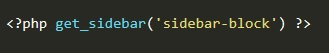

Обычно в верстках сайдбар помещается в тег <aside>. Для подключения статического сайдбара (тоесть мы его не сможем править в админ-консоли) необходимо создать файл sidebar.php и внего копируем версту нашего сайдбара.
В то место где у нас был сайдбар (т.е. в тег <aside>) мы вставляем код php:
Если у нас несколько сайдбаров, например есть два файла sidebar.php и sidebar-block.php, то для того что бы подключить конкретный сайдбар в скобках функции get_sidebar мы указываем имя файла:
Кстати можно эту же строчку написать вот так:
Т.к. в запросе уже есть слово sidebar, то функция get_sidebar поймет что за файл с именем block
Для подключения динамического сайдбара (его можно будет править через админ панель WP) необходимо открыть файл function.php и добавить туда действие:
Теперь необходимо тут же в файле function.php объявить нашу функцию:
В нашей функции мы будем использовать функцию register_sidebar. Входным параметром этой функции является ассоциативный массив array, элементы которого будут свойствами нашего сайдбара. Рассмотрим элементы этого массива.
Пара слов об этих двух свойствах, для чего они вообще нужны? Виджет это - элемент нашего сайдбара, например в нашей боковой панели у нас содержится календарь и поиск по сайту, так вот календарь и поиск - это и есть наши виджеты. По умолчанию WP помещает эти виджеты в тег <li> ненумерованного списка. Но что если это нам не подходит? Для таких случаев есть свойства before_widget и after_widget. Допустим мы хотим что бы наши виджеты помещались в тег div с определенным классом, для их дальнейшей стилизации, тогда в свойстве before_widget (т.е. перед виджетом) мы указываем <div class="class_name">. В свойстве after_widget мы прописываем: </div >\n. \n - это перенос на следующую строку метода echo.
Пример того как может выглядеть наша функция register_my_widgets:
Для того что бы отобразить наш динамический сайдбар, в теге <aside> мы вставляем php код:
Входящим параметром функции мы указываем идентификатор нашего сайдбара, который мы указывали в массиве функции register_sidebar
Все! после этого на сайте отобразится наш сайт бар. Редактировать мы теперь его можем в панели администратора (Внешний вид - Виджеты). Там должен появится наш сайдбар который мы настраиваем так как нам надо.